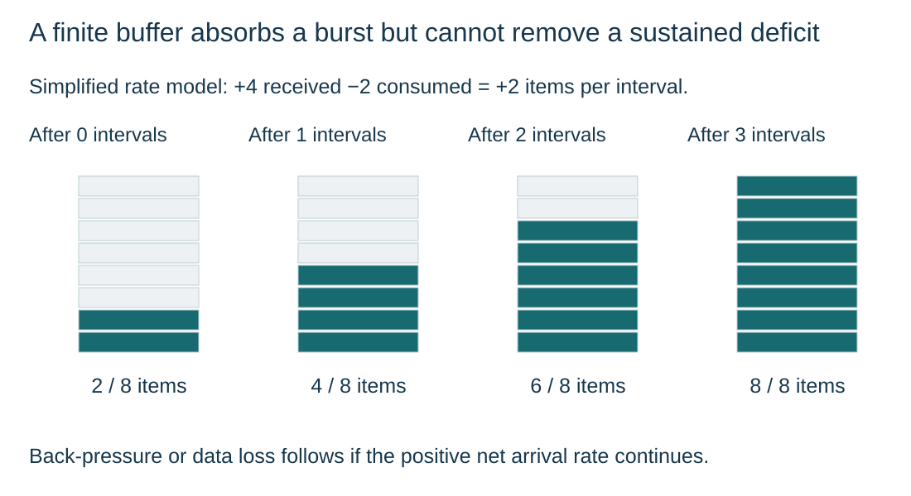

Buffers absorb temporary differences in transfer rate
Visual overview
A finite buffer absorbs a burst but cannot remove a sustained deficit

Visual transcript
- Illustrative buffer capacity: 8 items. It starts with 2 items; 4 arrive and 2 are consumed in each interval.
- Occupancy at interval boundaries is 2, 4, 6, 8: a net gain of 2 items per interval.
- Once full, further arrivals must be delayed or may be lost. The receiver still consumes only 2 items per interval.
Generalise the streaming idea to devices
A buffer is an area of memory that temporarily holds data during a transfer. A sender can produce a short burst faster than a receiver consumes it. The stored data waits until the receiver is ready, allowing the two sides to work at different instants. Capacity limits how much can wait; it does not increase the receiver’s sustained operating rate.
Recognise the same role in different systems
For a printer, a buffer can hold received page data while the print mechanism works. For a recorder, it can hold samples while storage completes a write. Lesson 012 developed streaming-rate calculations; here, track individual blocks and the producer’s response to a full buffer. A device driver translates device-specific requests, while a print queue orders jobs. Neither is the buffer’s temporary-storage role itself.
Trace full, paused and resumed transfer
Use a capacity of four blocks and an initially empty buffer. The sender has P1–P6 in order. At time zero it supplies P1–P4 and pauses with P5–P6 still waiting at the sender. At each later one-second event, the receiver removes the oldest block first; the sender then supplies one waiting block if there is space. Transfer at these event boundaries is assumed instantaneous for this trace.
Capacity four: all six blocks eventually leave
| Time | Event order | In the buffer after event | Waiting at sender | Removed so far |
|---|---|---|---|---|
| 0 s | Receive P1–P4; pause sender | P1, P2, P3, P4 | P5, P6 | None |
| 1 s | Remove P1, then receive P5 | P2, P3, P4, P5 | P6 | P1 |
| 2 s | Remove P2, then receive P6 | P3, P4, P5, P6 | None | P1, P2 |
| 3 s | Remove P3; no new arrival | P4, P5, P6 | None | P1–P3 |
| 4 s | Remove P4; no new arrival | P5, P6 | None | P1–P4 |
| 5 s | Remove P5; no new arrival | P6 | None | P1–P5 |
| 6 s | Remove P6; no new arrival | Empty | None | P1–P6 |
Check completion and the full boundary
At 6 s all six blocks have been removed once, in order, and the buffer is empty. Count a removed block at the receiver, not in the waiting column. If the producer cannot pause and sends to a full buffer, the system needs a specified policy such as dropping new data; otherwise data loss is possible. Do not invent a policy from capacity alone. The simpler three-block table below illustrates draining a single burst with no later arrivals.
Follow the waiting blocks
| Time | Event | Blocks still in buffer |
|---|---|---|
| 0 s | Sender places P1, P2, P3 in an empty buffer | P1, P2, P3 |
| 1 s | Receiver removes P1 | P2, P3 |
| 2 s | Receiver removes P2 | P3 |
| 3 s | Receiver removes P3 | Empty |
Core explanation · Exam essentials
- A finite buffer holds waiting data and absorbs temporary rate differences.
- On full capacity, apply the stated pause or loss policy; track arrivals and removals separately.